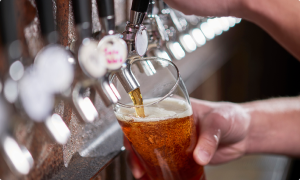

История завода
Пивоваренный завод СП ООО «ZOMIN BREWERY» — это самый современный завод, расположеный в экологически чистом регионе Узбекистана Джизакской области в г. Зомин. Первая партия пива была розлита в декабре 2018 года.
На сегодняшний день на заводе имеется 16 ЦКТ объемом 100 гекталитров, что в совокупности позволяет произвести продукцию 280 000 гекталитров пива в год

Линейки пива
Большой ассортимент элитного
алкоголя